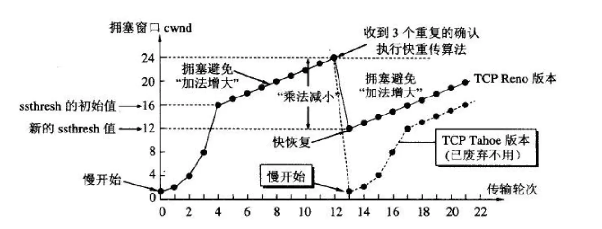

TCP可靠性

众所周知，TCP 协议传输的特点主要就是面向字节流、传输可靠、面向连接。这篇文章，我们讨论以下 TCP 如何确保传输的可靠性的。
确保传输可靠性的方式
TCP 协议保证数据传输可靠性的方式主要有：
- 校验和
- 序列号
- 确认应答
- 超时重传
- 连接管理
- 流量控制
- 拥塞控制
校验和
TCP 检验和的计算与 UDP 一样，在计算时要加上 12byte 的伪首部，检验范围包括 TCP 首部及数据部分，但是 UDP 的检验和字段为可选的，而 TCP 中是必须有的。
计算方法为：在发送方将整个报文段分为多个 16 位的段，然后将所有段进行反码相加，将结果存放在检验和字段中，接收方用相同的方法进行计算，如最终结果为检验字段所有位是全 1 则正确（UDP 中也是全为 1 则正确），否则存在错误。
示例：
为了方便以 4 位为例：
发送端计算：
数据：1000 0100 、校验和：0000
反码：0111 1011 1111
- 叠加：0111+1011+1111 = 0010 0001，高于 4 位的，叠加到低 4 位 0001 + 0010 = 0011 即为校验和。
接收端计算：
- 数据：1000 0100 、校验和 0011
- 反码：0111 1011 1100
- 叠加：0111+1011+1100 = 0001 1110，高于 4 位的，叠加到低 4 位 0001 + 1110 = 1111。全为1，则正确。
确认应答与序列号
序列号：TCP 传输时将每个字节的数据都进行了编号，这就是序列号。
序列号的作用：
- 保证可靠性（当接收到的数据总少了某个序号的数据时，能马上知道）。
- 保证数据的按序到达。
- 提高效率，可实现多次发送，一次确认。
- 去除重复数据
确认应答：TCP 传输的过程中，每次接收方收到数据后，都会对传输方进行确认应答。也就是发送 ACK 报文。这个 ACK 报文当中带有对应的确认序列号，告诉发送方，接收到了哪些数据，下一次的数据从哪里发。
超时重传
在进行 TCP 传输时，由于确认应答与序列号机制，发送方发送一部分数据后，都会等待接收方发送的 ACK 报文，并且解析报文，判断数据发送是否成功。但是由于一些原因，发送方可能接收不到 ACK 报文：
情况一：
情况二：
重传时间如何确定？
在 Linux 中，超时以 $500ms$ 为单位进行控制，每次判定超时重发的超时时间都是 $500ms$ 的整数倍。其规律为：如果重发一次仍得不到应答，就等待 $2500ms$ 后再进行重传，如果仍然得不到应答就等待 $4500ms$ 后重传，依次类推，以指数形式递增，重传次数累计到一定次数后，TCP 认为网络或对端主机出现异常，就会强行关闭连接。
连接管理
连接管理机制即TCP建立连接时的三次握手和断开连接时的四次挥手。
TCP文章中有详细结束，在此不在赘述。
流量控制
接收端处理数据的速度是有限的，如果发送方发送数据的速度过快，超过接收端的处理能力，就会造成丢包，继而引起丢包重传等一系列反应。
因此 TCP 支持根据接收端的处理能力，来决定发送端的发送速度，这个机制叫做流量控制。
在 TCP 报文段首部中有一个 16 位窗口长度，当接收端接收到发送方的数据后，在应答报文 ACK 中就将自身缓冲区的剩余大小，放入 16 窗口大小中。这个大小随数据传输情况而变，窗口越大，网络吞吐量越高，而一旦接收方发现自身的缓冲区快满了，就将窗口设置为更小的值通知发送方。如果缓冲区满，就将窗口置为 0，发送方收到后就不再发送数据，但是需要定期发送一个窗口探测数据段，使接收端把窗口大小告诉发送端。
注意：窗口大小不完全受 16 位窗口大小限制，在TCP首部 40 字节选项中还包含一个窗口扩大因子 M，实际窗口大小是窗口字段的值左移 M 位。
拥塞控制
TCP 传输的过程中，发送端开始发送数据的时候，如果刚开始就发送大量的数据，那么就可能造成一些问题。网络可能在开始的时候就很拥堵，如果给网络中在扔出大量数据，那么这个拥堵就会加剧。拥堵的加剧就会产生大量的丢包，就对大量的超时重传，严重影响传输。
因此 TCP 引入了慢启动的机制，在开始发送数据的时候，先发送少量的数据探路，探清当前网络拥堵的状态后，在决定按照多大的数度发送数据。这时候引入了一个叫做拥塞窗口（cwnd）的概念。每次收到一个 ACK 应答，拥塞窗口加1，在发送数据之前，首先将拥塞窗口与接收端反馈的窗口大小比对，取较小的值作为实际发送的窗口。
TCP 的四种拥塞控制算法：
- 慢开始
- 拥塞避免
- 快重传
- 快恢复
慢开始
假设当前发送方拥塞窗口 cwnd 的值为 1，发送方当前发送一个数据报文段，接收方收到该数据报文段后，给发送方回复一个确认报文段，发送方收到该确认报文后，将拥塞窗口的值变为 2，发送方此时可以连续发送两个数据报文段，接收方收到该数据报文段后，给发送方返回 2 个确认报文段，发送方收到这两个确认报文后，将拥塞窗口的值加 2 变为 4，发送方此时可连续发送 4 个报文段，接收方收到 4 个报文段后，给发送方回复 4 个确认报文，发送方收到确认报文后，将拥塞窗口的值加 4 变为 8，发送方此时可以连续发送 8 个数据报文段…
当前的拥塞窗口 cwnd 的值已经等于慢开始门限值 ssthresh，之后改用拥塞避免算法。
拥塞避免
此时每个传输轮次，拥塞窗口 cwnd 只能线性加一，而不是像慢开始算法时，每个传输轮次，拥塞窗口 cwnd 按指数增长。同理：16+1… 直至到达 24，假设 24 个报文段在传输过程中丢失 4 个，接收方只收到 20 个报文段，给发送方依次回复 20 个确认报文段，一段时间后，丢失的 4 个报文段的重传计时器超时了，发送发判断可能出现拥塞，更改 $ssthresh = cwnd / 2、cwnd = 1$ 并重新开始慢开始算法。
快重传
快重传算法规定，发送方只要一连收到三个重复确认（一共是四个，第一个 ACK 2 是正常的）就应当立即重传对方尚未收到的报文段 2，而不必继续等待为 2 设置的重传计时器到期进行超时重传。
因为超时重传需要重新开始慢启动算法，cwnd 重置未 1，太影响效率。
快恢复
与快重传配合使用：
- 当发送方连续收到三个重复确认时，就执行“乘法减小”算法，把慢开始门限 ssthresh 减半。这是为了预防网络发生拥塞。请注意，接下去不执行慢开始算法。
- 由于发送方现在认为网络很可能没有发生拥塞（如果网络发生了严重的拥塞，就不会一连有好几个报文段连续到达接收方，也就不会导致接收方连续发送重复确认），因此与慢开始不同之处是现在不执行慢开始算法（即拥塞窗口 cwnd 现在不设置为 1），而是$cwnd = cwnd/2、sshthresh = cwnd$，然后开始执行拥塞避免算法，使拥塞窗口缓慢地线性增大。

上图给出了快重传和快恢复的示意图，并标明了“TCP Reno版本”，这是目前使用得很广泛的版本。
图中还画出了已经废弃不用的虚线部分（TCP Tahoe 版本）。请注意它们的区别就是：新的 TCP Reno 版本在快重传之后采用快恢复算法而不是采用慢开始算法。
参考文章：